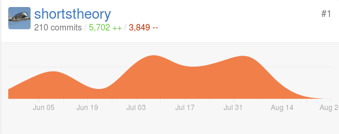
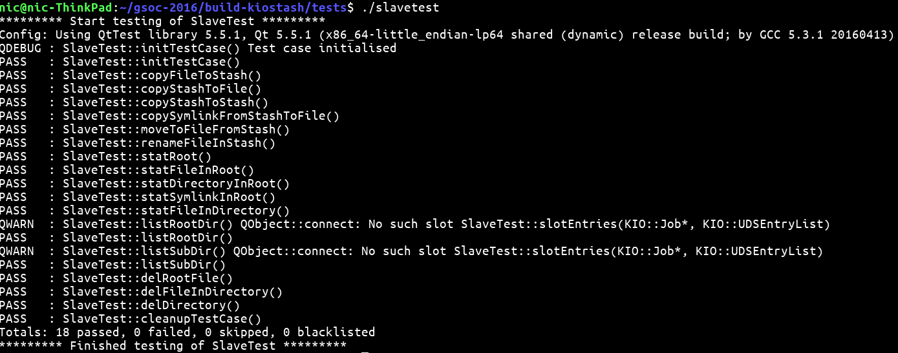

That’s it. After a combined total of 217 git commits, 6,202 lines of code added, and 4,167 lines of code deleted, GSoC 2016 is finally over.

These twelve weeks of programming have been a very enriching experience for me and making this project has taught me a lot about production quality software development. Little did I know that a small project I had put together in a 6 hour session of messing around with Qt would lead to something as big as this!
There have been many memorable moments throughout my coding period for the GSoC - such as the first time I got an ioslave to install correctly, to writing its “Hello World” equivalent, and getting a basic implementation of the project up and running by doing a series of dirty hacks with Dolphin’s code. There were also times when I was so frustrated with debugging for this project, that I wanted to do nothing but smash my laptop’s progressively failing display panel with the largest hammer I could find. The great mentorship from my GSoC mentor and the premise of the GSoC program itself kept me going. This also taught me an important lesson with regards to software development - no one starting out gets it right on their first try. It feels like after a long run of not quite getting the results I wanted, the GSoC is the thing which worked out for me as everything just fell into place.
There’s a technical digression here, which you can feel free to skip through if you don’t want to get into the details of the project.
Following up from the previous blog post, with the core features of the application complete, I had moved on to unit testing my project. For this project, unit testing involved writing test cases for each and every component of the application to find and fix any bugs. Despite the innocuous name, unit testing this project was a much bigger challenge than I expected. As for one thing, the ioslave in my project is merely a controller in the MVC system of the virtual Stash File System, the Dolphin file manager, and the KIO Slave itself. Besides, most of the ioslave’s functions have a void return type, so feeding the slave’s functions’ arguments to get an output for checking was not an option either.
This led me to use an approach, which my mentor aptly called “black box testing”.
In this approach, one writes unit tests testing for a specific action and then checking for whether the effects of the said action are as expected. In this case, the ioslave was tested by giving it a test file and then apply some of the ioslave’s functions such as copy, rename, delete, and stat. From there, through a bunch of QVERIFY calls is to check whether the ioslave has completed the operation successfully. Needless to say, this approach is far more convoluted to write unit tests for as it required checking each and every test file for its properties in every test case. Fortunately, the QTestLib API is pretty well documented so it wasn’t difficult to get started with writing unit tests. I also had a template of what a good test suite should look like thanks to David Faure’s excellent work on implementing automated unit testing for the Trash ioslave. With these two tools in hand, I started off with writing unit tests shortly before the second year of college started.
As expected, writing black box unit tests was a PITA in its own right. The first time I ran my unit test I came up with a dismal score of 6 unit tests passed out of the 17 I had written. This lead me to go back and check whether my unit tests were testing correctly at all. It turned out that I had made so many mistakes with writing the unit tests that an entire rewrite of the test suite wasn’t unwarranted.
With a rewrite of the test cases completed, I ran the test suite again. The results were a bit better - 13 out of the 17 test cases passed, but 4 failed test cases - enough reason for the project to be unshippable. Looking into the issue a bit deeper, I found out that all the D-Bus calls to my ioslave for copy and move operations were not working correctly! Given that I had spent so much time on making sure the ioslave was robust enough, this was a mixed surprise. Finally, after a week of rewriting and to an extent, refactoring the rename and copy functions of the ioslave, I got the best terminal output I ever wanted from this project.

Definitely the highest point of the GSoC for me. From there on out, it was a matter of putting the code on the slow burner for cleaning up any leftover debug statements and for writing documentation for other obscure sections. With a net total of nearly 2000 lines of code, it far surpasses any other project I’ve done in terms of size and quality of code written.
At some points in the project, I felt that the stipend was far too generous, for many people working on KDE voluntarily produce projects much larger thann mine. In the end, I feel the best way to repay the generosity is to continue with open source development - just as the GSoC intended. Prior to the GSoC, open source was simply an interesting concept to me, but contributing a couple of thousands of lines of code to an open source codebase has made me realise just how powerful open source is. There were no restrictions on when I had to work (usually my productivity was at its peak at outlandish late night hours), on the machine I used for coding (a trusty IdeaPad, replaced with a much nicer ThinkPad), or on the place where I felt most comfortable coding from (a toss up between my much used study table or the living room). In many ways, working from home was probably the best environment I could ask for when it came to working on this project. Hacking on an open source project gave me a sense of gratification solving a problem in competitive programming never could have.
The Google Summer of Code may be over, but my journey with open source development has just begun. Here’s to even bigger and better projects in the future!
Go Top